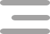

<app-side-menu></app-side-menu>
<ion-content id="main">

    <div slot="fixed" class="container-fixed">
        <ion-grid>
            <ion-row>
                <ion-col size="3">
                    
                </ion-col>
                <ion-col size="7"></ion-col>
                <ion-col size="2">
                    
                </ion-col>
            </ion-row>
        </ion-grid>
    </div>
    <ion-grid>
        <ion-row>
            <!-- search bar -->
            <ion-searchbar class="search" placeholder="Search here ..">
                
            </ion-searchbar>
            <!-- end search bar -->
        </ion-row>
        <ion-row [ngStyle]="{'direction': translate.currentLang == 'ar' ? 'rtl' : 'ltr'}">
            <ion-col size="6">
                <p>{{'common.trending_blogs' | translate}}</p>
            </ion-col>
            <ion-col size="6">
                <p class="see-all" [ngStyle]="{'text-align': translate.currentLang == 'ar' ? 'left' : 'right'}" routerLink="/tabs/blogs" >{{'common.see_all' | translate}}</p>
            </ion-col>
        </ion-row>
        <ion-row>
            <!-- trending blogs -->
            <ion-slides [options]="slideOpts" class="blogs">
                <ion-slide *ngFor="let blog of trendingBlogs">
                    <app-blog [blog]="blog"></app-blog>
                </ion-slide>
            </ion-slides>
            <!-- end trending blogs -->
        </ion-row>
        <ion-row>
            <ion-list lines="none" class="posts">
                <ion-item class="post" *ngFor="let post of feed;let i = index" (click)="openPost(i)">
                    <app-post [post]="post" style="width: 100%;"></app-post>
                </ion-item>
            </ion-list>
        </ion-row>
    </ion-grid>
</ion-content>
